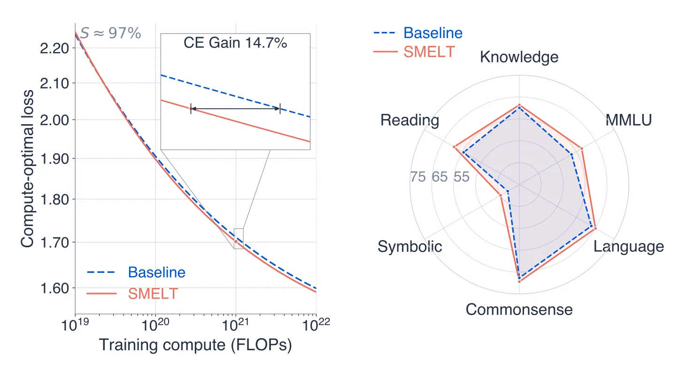
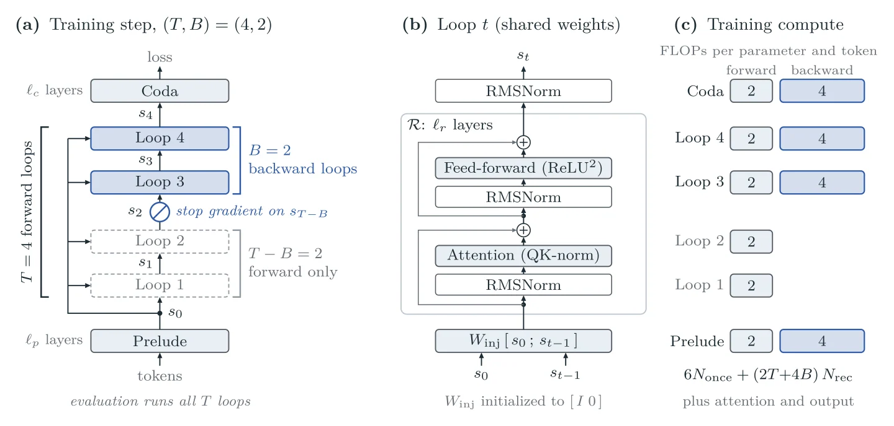
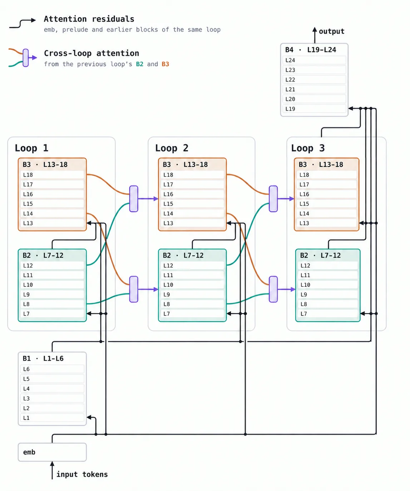
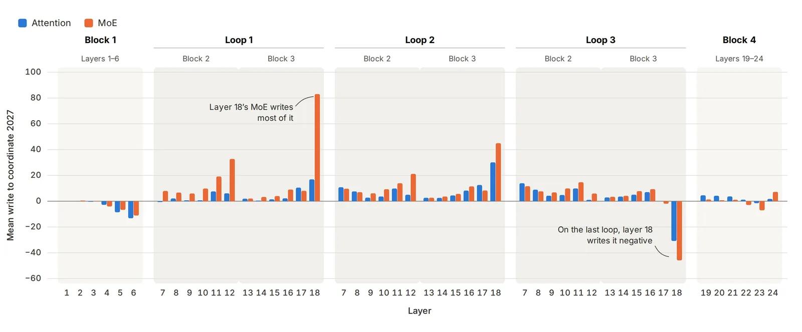

循环 Transformer（Looped Transformer）通过重复执行同一段共享层，把“执行深度”与“静态参数量”拆开[6][7]。过去很多评测只在相同静态参数量下做对比，无形中让循环模型多花了成倍的 FLOPs 和 KV cache，很难分辨收益究竟来自结构本身还是额外算力。
2026 年的三组核心研究把这条技术链条拼完整了：SMELT[1]在单 token FLOPs、总参数量和 KV cache 三项预算同时对齐时证明 MoE 循环依然净赚；Truncate or Not?[2]系统算清了有限算力下前向与反向循环次数的账；Thinking Machines Lab 开源的 Inkling 2 Mini[3]与 Goodfire 的可解释性追踪[4]，则把双路注意力残差与内部协作电路直接摆到了台面上。
三种循环架构一览
三条路线都把靠近输入输出的首尾层留作非共享参数、只循环中间核心层，但分别切中了不同问题：MoE 严格等预算缩放、稠密模型 $(T, B)$ 梯度截断博弈，以及多块交叉循环的注意力残差路由。

| 架构方案 | 主干与循环跨度 | 状态耦合与反传策略 | 核心结论 |
|---|---|---|---|
| SMELT[1] | 稀疏 MoE (GQA, top-8)；中间 50% 层循环 2 遍 | $1/2$ 缩放累加残差；完整 BPTT 训练至 215B tok | 等算力/参数/KV 下前沿省 6.8–18.0% 训练算力 |
| Truncate or Not?[2] | 稠密 Huginn 式（58M–919M）；中间层循环 $T\in\{1..16\}$ | 重注入 $W_{\text{inj}}[s_0; s_{t-1}]$ + RMSNorm；扫描 $(T,B)$ | 同算力完整反传胜出；$(2,2)$ 少 27% 参数近持平 |
| Inkling 2 Mini[3][4] | 24 层混合 MoE (8/128)；Block 2–3 循环 3 遍（48 层） | 深度 + 跨循环 AttnRes ($\kappa\odot x + \gamma\odot m$)；NVFP4/MXFP8 | <100B 开源编码领先（DeepSWE 48.2%）；$d_{2027}$ 控跨轮 |
SMELT：等算力 MoE 循环
三项预算同时对齐的配方
论文 SMELT: Scaling Laws for Compute-Matched MoE Looped Transformers[1] 直面一个核心难题：在常规 12 层模型里把中间 6 层重复跑两遍（实算 18 层），静态参数没变，但单 token FLOPs 和 KV cache 会直接涨一半。此前在稠密模型上做等 FLOPs（Iso-Depth）对比时，为了扣回算力必须砍掉独立参数，导致 $r$ 次循环只相当于 $r^{0.46}$ 份独立层的容量，最终输给不循环基线。SMELT（Sparse MoE Transformer, middle layers Loop Twice）用稀疏 MoE 的参数–算力解耦把三项预算一次配平[1]：
- 对齐单 token FLOPs（误差 < 4%）：主动收窄隐层宽度 $H$（例如 200M、等效稀疏度 $S\approx 95\%$ 档把 $H$ 从 $1280$ 压到 $1056$），抵消多跑一遍中间层增加的计算，单 token 训练算力落在 $1.37\times 10^9$ 对基线 $1.33\times 10^9$（$+2.9\%$）。
- 补回总非嵌入参数（误差 < 1%）：变窄会缩水每个专家的参数，作者保持每层仍只激活 top-8，但把每层专家总数从 $192$ 提到 $288$，总参数精准回到 $3.89\text{B}$ 对 $3.87\text{B}$（$+0.4\%$）。
- 对齐 KV cache（误差 < 4%）并做残差缩放：通过减小 attention head 维度并提高 GQA 分组倍率把 KV 显存拉平；循环区域内的 Attention 和 MoE 残差更新均乘以 $1/r$（$1/2$），防止共享权重连续写入把残差流放大失稳。

在此配平协议下，200M 上的三组消融锁死了配方[1]：（1）循环位置上，只重复中间 50%（第 4–9 层）在 $S\approx 85\%$（$1.9257$ vs. $1.9322$）和 $S\approx 95\%$（$1.8517$ vs. $1.8601$）下均优于全栈循环；（2）深宽比上，循环模型的最佳有效深宽比大于基线（物理 12 层 / 实算 18 层赢下全部指标），得益于共享块能从多深度反向路径收梯度；（3）循环次数上，算力受限下 $2\times$ 胜过 $3\times$ 和 $4\times$（验证 loss $1.9257$ vs. $1.9385 / 1.9360$），跑更多遍会把宽度压得太细。
缩放律与超越 Loss 的下游收益
作者将该配方扩展到 $4 \times 4$ 缩放网格（100M / 200M / 600M / 1.6B 四个激活规模，配 $S=0\%$ 稠密参照及 $S\approx 85\%, 95\%, 97\%$ 三档稀疏度，总非嵌入参数最高 53.9B，WSD 稳定–退火到 215B tokens），SMELT 在全部 16 个网格点上均低于基线[1]。由 FLOPs 比值定义计算等效稀疏度 $N_{\text{act}}^{\text{eq}} = (F/F_0)N_0$、$S = 1 - N_{\text{act}}^{\text{eq}}/N$，分别拟合 Chinchilla 风格 MoE 缩放律：
$$\begin{aligned} \mathcal{L}(F, S, D) &= E + \frac{A\,(1 - S)^b}{F^a} + \frac{K}{D^c}, \\ \mathcal{L}^*(C, S) &= E + f(A,K,a,b,c,S)\,C^{-\gamma}, \qquad \gamma = \frac{ac}{a+c}. \end{aligned}$$在稀疏主战场（$S \approx 85\text{–}97\%$），SMELT 的容量指数（$a = 0.3892$ vs. $0.3703$）与数据指数（$c = 0.7011$ vs. $0.6594$）同步提高，前沿斜率 $\gamma$ 提升 $+5.5\%$（$0.250$ vs. $0.237$）。按同验证 loss 反查算力，SMELT 在 $10^{20}$ FLOPs 节省 6.8–10.0% 训练算力，到 $10^{21}$ FLOPs 扩大到 14.7–18.0%（外推 $10^{22}$ 约 $19.6\text{–}23.5\%$），且最优单参数 token 配比（~56–91 TPP）几乎不用改动。

更有意思的是下游指标涨幅比验证 loss 预测的还高[1]。96 对配对评估里，SMELT 在 DCLM Completion 赢 96/96、DCLM Core 赢 83/96、高于随机基线的 MMLU 赢 29/30；用基线数据拟合「loss → 得分」S 型曲线后，SMELT 的正残差随规模单调放大（1.6B 时 Completion 多降 $12.3\text{ millinats}$、Core 高 $+1.2\text{ pp}$，其中符号推理类以 $+1.9\text{ pp}$ 反超阅读理解）。按验证域拆分，结构化最强的 Code 省算力高达 20.4%（其次 Finance $16.8\%$、Math/STEM $16.6\%$，Web 为 $14.8\%$）；对长样本（$512\text{–}4096$ vs. $32\text{–}256$ tokens）增益放大至 $1.52\times$（单纯加参数或加专家对照组仅为 $0.98\times$ 和 $0.88\times$）；上下文学习示例一出现（$k\ge 1$），优势就从 $0.9\text{ pp}$ 拉大到 $1.9\text{ pp}$，32-shot Dyck 括号匹配达到 $29.8\%$ vs. $26.4\%$。

第二遍循环到底在算什么
在 1M 验证集上探测共享中间层两次经过时的内部变化，可以确认第二遍并非机械复读，而是沿着第一遍铺好的索引轨迹做深度加工与信息提纯[1]：

- §6.1 专家路由“部分复用 + 部分换将”：高稀疏度 $S\approx 97\%$ 下，同一 token 两遍经过同一物理门控时仍稳稳复用 2–3 个核心专家（远高于均匀随机 $8^2/504\approx 0.13$），同时把其余 5–6 个槽位路由给不同专家，在共享权重上走出差异化计算路径。
- §6.2 残差更新更强且方向一致：全部 16 个网格里，第二遍的 Attention 与 MoE 写入范数均放大至 1.2–3.5×（由于方向变化触发 RMSNorm 逐维缩放，送入子层的归一化输入本身已放大）；且同物理层跨两遍更新方向的余弦相似度达 $0.42\text{–}0.65$（均值 $0.56$，错层仅 $0.16$），说明是在强化细化而非推翻覆盖。
- §6.3 Q/K 稳定锁定坐标，V 重写读取内容：第二遍重算后，$Q, K$ 跨遍余弦仍达 $0.89\text{–}0.93$（甚至不低于输入 $X$ 的 $0.84\text{–}0.93$），离散 top-8 关注 token 重合度达 56–66%（同层异头对照仅 $28\text{–}34\%$）；而 $V$ 相似度跌到 $0.65\text{–}0.74$、输出 $O$ 进一步分化（$0.49\text{–}0.64$）——“看向哪里”基本保留，“从那里读什么”发生了实质更新。
- §6.4 压低 Attention Sink、转向示例答案：1.6B Dyck 任务中，关键 head 在 BOS 的 sink 权重从 60% 骤降到 2%，示例答案上的权重从 24% 飙升到 85%；在 1M 通用验证语料上，第二遍同样普遍削弱了各 head 的初始 token 聚集，甚至逆转了常规架构越往深层 sink 越重的趋势。

Truncate or Not?：梯度截断与训练算力账
输入重注入与 (T, B) 算力核算
论文 Truncate or Not? A Scaling Study of Looped Transformers with Truncated Backpropagation[2]（港大 MMLab 与耶鲁）在 FineWeb-Edu 上一口气跑了 592 次训练（$58\text{M}\text{–}919\text{M}$ 非嵌入参数），专门回答训练循环模块时「该截断反传还是完整反传」。模型沿用 Huginn[7] 风格的 Prelude–Recurrent–Coda 三段式结构（如 240M 为 $3/6/3$ 层，循环 4 遍共执行 $3+4\times 6+3=30$ 层）：
$$s_0 = \mathcal{P}(x),\qquad s_t = \Phi_\theta(s_{t-1}; s_0) = \operatorname{RMSNorm}\!\Big(\mathcal{R}\!\big(W_{\text{inj}}[s_0;\,s_{t-1}]\big)\Big),\qquad p = \mathcal{C}(s_T).$$
这里有三处关键机制：（1）每轮重注入 $s_0$：拼接 $[s_0; s_{t-1}]$ 后用 $W_{\text{inj}}\in\mathbb{R}^{d\times 2d}$ 投回 $d$ 维（初始化为 $[I, 0]$，先吃初始输入再逐步学会融合上一轮状态），末尾 RMSNorm 稳住隐状态尺度；（2）梯度截断 $(T, B)$：前向完整跑完 $T$ 轮，但在第 $T-B$ 轮输出 $s_{T-B}$ 上做 detach，只有最后 $B$ 轮和 Coda 进计算图——但别漏掉旁路，Prelude 依然会通过最后 $B$ 轮对 $s_0$ 的重注入收到梯度；（3）算力对称性：按单轮前向约 $2N_{\text{rec}}$、反向约 $4N_{\text{rec}}$ FLOPs 估算，总计算等效参数为：
省 2 轮反向省出的 $8 N_{\text{rec}}$ 恰好够多跑 4 轮前向，因此 $(8, 2)$ 和 $(4, 4)$ 循环成本完全相等（同为 $24 N_{\text{rec}}$，$T+2B=12$），$(4, 1)$ 与 $(2, 2)$ 也完全相等。从不动点理论看[2]，截断 $B$ 步相当于只保留 Neumann 级数 $\sum_{k=0}^{B-1}(\mathcal{J}^\star)^k \partial_\theta\Phi^\star$ 的前 $B$ 项；当总轮数只有 $T=2\text{–}8$、隐状态离收敛不动点尚远时，丢掉前段梯度会在每一步积累偏差。
有效参数缩放律与三类决策场景
用有界循环系数 $g(T, B)$ 放缩循环块的有效参数量（拟合 230 组配置 $R^2=0.9992$，样本内 RMSE $6.14\times 10^{-3}$ nats，留一配置群 $(T,B)$ 外推误差 $8.67\times 10^{-3}$，比无界幂律增益少近一半误差）[2]：
$$\begin{aligned} L &= E + \left[A\left(\frac{N_{\text{eff}}}{N_0}\right)^{-\alpha} + H\left(\frac{D}{D_0}\right)^{-\beta}\right]^{\kappa}, \\ N_{\text{eff}} &= N_{\text{once}} + g(T,B) N_{\text{rec}}, \qquad g(T, B) = \exp\!\Big[c\,(1 - T^{-p}B^{-q})\Big]. \end{aligned}$$全数据集拟合得到 $c \approx 1.112$、$p \approx 0.237$、$q \approx 1.022$（饱和上限 $e^c \approx 3.04$），关键在于 $q \gt 2p$ 且差距超过两倍。在等算力约束 $T+2B=S$ 下极小化 $T^{-p}B^{-q}$（引理 D.2）可以严格证明：只要 $q \ge 2p$，最优解永远压在边界 $T^* = B^* = S/3$——也就是说，用多余前向轮数换取完整反传的「反向每一轮」，比保留一堆无梯度前向更划算。

| 决策约束 | 最优策略 | 关键实验与拟合数据 |
|---|---|---|
| 前向轮数固定 ($T=8$) | 截断至 $B^* = 2$ | 极小化单位算力效率 $\chi = N_{\text{comp}}/N_{\text{eff}}$，把省下算力分给 $1.51\times N,\,1.20\times D$，同 loss 省 33–35% FLOPs |
| 前向轮数可调（同 $N, D$） | 完整 BPTT ($B=T$) | 5 个规模下 $(4,4)$ 全胜 $(8,2)$（240M: $2.2642$ vs. $2.2778$ nats），前沿同 loss 省 8–14% 算力 |
| 参数量 $N$ 固定（显存受限） | 慢扩循环、快扩数据 | 完整反传渐近率 $T^* \propto C^{0.24}$、$D^* \propto C^{0.76}$；$(1,1)\to(2,2)$ 约 14–17 TPP 切换，$(2,2)\to(4,4)$ 实测约 200 TPP 切换 |
| 参数与数据全自由（稠密） | $(1,1)$ 省算力 / $(2,2)$ 最佳循环 | 近等算力下 $(2,2)$ 344M 与 $(1,1)$ 471M 几乎打平（$2.3677$ vs. $2.3663$），非嵌入参数少 27%；$+8\%$ 算力即以 $2.3590$ 反超 |

把稠密（Truncate or Not?）和稀疏（SMELT）串起来看：表面上一个说「自由参数时别循环最好」，另一个说「MoE 循环能省 6.8–18.0% 算力」，其实两者根本不矛盾，甚至在核心结论上高度合拍——两项研究各自独立发现 「完整反传 + 循环 2 遍」是最优甜点。差别在于稠密模型绑定参数后，$g(2,2)\approx 1.910 \lt 2$ 无法释放多余算力去补参数；而 SMELT 靠稀疏 MoE 把变窄省出的权重空间变成更多专家，加上二次访问天然触发专家重路由，最终打破了稠密模型的收益上限。
Inkling 2 Mini：生产级循环与内部电路
注意力残差与跨循环数据流
由 Thinking Machines Lab 发布（Introducing Inkling 2 Mini[3][5]）并由 Goodfire 进行可解释性剖析（Interpreting Inkling 2 Mini[4]）的 Inkling 2 Mini（Apache 2.0），把循环 MoE 做成了本地笔记本（~20GB 原生 NVFP4/MXFP8 权重、1M 上下文）可跑的多模态推理模型：26.4B 总参数、3.4B 静态激活、跨 3 轮等效 5.4B 激活；24 物理层（$d=2304$，训练中从 384 专家剪枝至 top-8 of 128 并经 1T token 蒸馏修复与 2.2T token RL）按每 6 层切分 4 个 Block——Block 1（$1\text{–}6$ 层）和 Block 4（$19\text{–}24$ 层）各跑一遍，中间 Block 2、3（$7\text{–}18$ 层）循环 3 遍共执行 48 层。中间 12 层循环相比尾部 12 层在 28 项评测中赢下 27 项（等效算力增益 $1.51\text{–}1.91\times$ vs. $1.24\text{–}1.36\times$）；512k 长轨迹测试里，不循环版本需多花 $140\%$ 推理算力才追上同等的验证 loss（训练算力仅省 $7.5\%$）[3]。

架构上最核心的创新，是用块级 Attention Residuals[8] 加 跨循环注意力（Cross-Loop Attention）取代了单条累加残差流[4]。每个 Block 从零累加自己 6 层 Attention + MoE 的输出得到 $\mathbf{v}_i$（嵌入层视作 $\mathbf{v}_0$）；单 token 进子层前，先通过深度注意力读取当前循环前面各个块的和 $\mathbf{x}=\sum_j\alpha_j\hat{\mathbf{v}}_j$，从第 2 轮起还用 4 组独立查询向量 $\mathbf{u}_{Q,K,V,\text{MoE}}$ 去读上一轮的 Block 2 和 Block 3 总结，再用 64 维瓶颈门控混合：
$$\begin{aligned} \mathbf{m}_s &= \sum_{j\in\{2,3\}} \beta_j\,\hat{\mathbf{v}}_j^{[t-1]}, \qquad \mathbf{z} = \mathbf{P}\big[\text{RMSNorm}(\mathbf{x});\,\text{RMSNorm}(\mathbf{m}_s)\big], \\ \mathbf{x}' &= \underbrace{\big(1 - \tanh(\mathbf{F}\mathbf{z})\big)}_{\boldsymbol{\kappa}}\odot\mathbf{x} + \underbrace{\tanh(\mathbf{G}\mathbf{z})}_{\boldsymbol{\gamma}}\odot\mathbf{m}_s. \end{aligned}$$其中增益 $\boldsymbol{\gamma}$ 初始化为 0，训练初期与普通不循环模型完全一致再平滑打开跨轮通道[3]。因为整条路径可以精确拆成之前所有层输出 $\mathbf{o}_w$ 的线性加权和 $\mathbf{x}'=\sum_w \mathbf{c}_w$（投影份额 $s_w = (\mathbf{c}_w \cdot \mathbf{x}')/\|\mathbf{x}'\|^2$ 之和恒为 1），Goodfire 的信息流分解清楚捕捉到一个反直觉现象[4]：第 2 轮的第 13 层（Block 3 首层）本轮已通过深度注意力拿到 Block 2 ($\mathbf{v}_2^{[2]}$)，于是跨循环注意力几乎全部去读上一轮的 Block 3 ($\mathbf{v}_3^{[1]}$)——包含第 18 层的输出，等于在跨轮通道里直接读取了「物理层号在自己之后」的结果。
![Inkling 2 Mini 第 2 轮第 13 层的双路数据流拆解：深度注意力读当前轮 v0/v1/v2[2]，跨循环注意力通过 4 组独立读取头对比上一轮 v2[1] 与 v3[1] 并经 64 维门控融合，底部展示第 18 层如何用 d2027 正负翻转控制跨轮信号。](../fig-inkling-dataflow.svg)
权重打标与异常维度 d2027 开关
没有人为规定路由规则，模型怎么学会每一轮该去读哪一块？Goodfire 在 13,233 个 FineWeb token 上从权重和激活两头挖出了具体回路[4]：
- 块末层的权重“打标（Tagging）”：扫描全部 24 层 $3{,}538{,}944$ 条 MoE down-projection 写入列向量与 $104$ 个块读取向量，在绝对余弦最高的 3,490 对（$|\cos| \ge 0.30$，前 $0.001\%$）里，几乎全挤在每块最后一层——层 6/12/18 集中写给 Block 4 的深度读取器，而跨循环写入高度集中在 Block 3 末层（层 18）并精准对准下一轮 Block 3 首层（层 13）[4]。
- 超级异常维度 $d_{2027}$ 独扛半壁江山：RMS 归一化后向量平方范数恒为 $d=2304$（均摊每维贡献 $0.043\%$），但单单第 2027 维均值就飙到 $+32.4$，一维独占 46% 的总平方范数。由于 $\beta_3 = \sigma(s_3 - s_2) = \sigma\!\big(\frac{1}{\sqrt{2304}}\sum_i u_i(\hat{v}_{3,i}-\hat{v}_{2,i})\big)$，在 Loop 2 第 13 层仅凭 $d_{2027}$ 一维就分别解释了 Block 3 选中优势差值的 17% ($Q$)、19% ($V$)、11% ($K$) 和 6% (MoE)（前 5 异常维合计占 60%/62%/32%/30%）[4]。
- 同一层权重的三轮“过河拆桥”开关：最震撼的是，同样一套层 18 权重，在 Loop 1 和 Loop 2 结尾往 $d_{2027}$ 狠狠写入大正值（给下一轮发信号读取 Block 3），到了最后一遍 Loop 3 结尾，因为后面没有循环了、马上进 Block 4 解码，层 18 竟在同一维度上写出大幅负尖峰主动清零标志位[4]！

中间层解码、推理边界与可监控性
Goodfire 在 1,250 篇 FineWeb 文档上对比了几种中间表征解码方法[4]：直接套最终 unembedding 的 Logit-lens 只有在每轮接近第 18 层结尾时才像点样；而用仿射对齐的 Tuned-lens 或直接拿原模型 Block 4（Coda）跨序列推理中间隐状态的 Coda-lens，哪怕在很早的循环轮次就能以高 top-50 命中率和概率质量还原最终答案。说明模型即便把大量推理折进了循环隐空间，中间计算依然保持可解码结构。

结合 Inkling 2 Mini（DeepSWE v1.1 达 $48.2\%$、Vals Index v2.2 达 $46.5\%$、DGX Spark 上能耗智力比 $0.703$ 显著领先 Qwen3.6-35B-A3B 的 $0.430$）和可调循环研究版 TML-d24-varloop-research，Thinking Machines 还把循环的推理收益与 CoT 安全监控边界拆得很清楚[3][5]：
- 循环加推理不加死记知识：在不写 CoT 的 Think Fast 评测中，随循环从 1 次增至 3 次，50% 可靠时域从 $16\text{ s}$ 提到 $37\text{ s}$，并在训练未见过的 10 次循环上稳定维持（$40\text{ s}$）；纯多跳串行任务 N-Hop Lookup 直到 10 次循环仍在提分。但封闭域事实 QA（SimpleQA Verified、AA-Omniscience）几乎不随循环增长——知识存储上限依然卡在 $26.4\text{B}$ 权重容量，靠高频工具与搜索能力（BrowseComp $79.0\%$、DeepSearchQA $85.3\%$）补足[3]。
- 思考链变短了，却没有“隐身”：在各循环遍数都答对的 GPQA Diamond 题目上，循环增加让思考 token 砍掉一半多，省下的主要是「wait / actually / hmm」式自我回溯与反复试错，平均句长与英文词典可读率几乎不变；模型操控 CoT 规避检查的能力也极低（$\le 0.1\%$），在完整监督下的 LinuxArena 恶意隐藏率保持 $0.3\text{–}1.3\%$（官方同时提示，针对更多循环遍数专项 RL 的大模型仍需持续监控）[3]。
| GPQA Diamond 已解题思维链指标 | 1 Pass | 3 Passes | 5 Passes |
|---|---|---|---|
| 平均思考 token 数 | 3,703 | 1,731 | 1,661 |
| 平均每句词数 | 8.9 | 8.7 | 8.7 |
| 英文词典词汇占比 | 94.6% | 94.5% | 94.4% |
| 犹豫回溯词出现次数 | 9.7 | 3.9 | 3.6 |
架构与训练启示
- MoE + 中间层循环才是等算力赢家：单独看稠密模型容易陷入“省参数就丢容量”的死结；把中间 50% MoE 层循环两遍并用新增专家补足总容量、同时放宽深宽比和对齐 KV，就能在严格等预算下实打实赚回 6.8–18.0% 训练算力和更好的长程推理能力[1]。
- 算力优先给完整反传，别为了多空转前向截断：因为每一轮完整反传带来的有效参数增益远远高过仅多跑前向（$q\approx 1.02 \gg 2p\approx 0.47$），$(4,4)$ 在同算力下稳赢 $(8,2)$；只有前向轮数因推理时延或固定架构被锁死高值时，才值得靠 $B^*=2$ 截断减负[2]。
- 用块级注意力残差接管跨轮信息流：用 depth-wise + cross-loop 注意力替代单一累加残差后，权重无需额外人工监督就能在块末层自发演化出 $d_{2027}$ 这类兼任“路由标签”与“出循环清零”的稀疏控制通道，而且全程仍可通过 Coda/Tuned 透镜保持可解释性[4]。
引用本文
如果本文的整理或图示对你有帮助，欢迎引用：
Chaoran Feng (2026). "Looped Transformers: Compute-Matched Scaling, Training Gradients, and Internal Circuits". Chaoran Feng's Blog. https://www.falcary.com/blogs/looped-transformers/
@article{feng2026looped,
title = {Looped Transformers: Compute-Matched Scaling, Training Gradients, and Internal Circuits},
author = {Feng, Chaoran},
year = {2026},
month = {November},
url = {https://www.falcary.com/blogs/looped-transformers/}
}参考文献
- SMELT: Scaling Laws for Compute-Matched MoE Looped Transformers. Wang, Zhang et al., Tsinghua University, ByteDance Seed, M-A-P, and TokenWave.AI, 2026 (arXiv:2609.01343).
- Truncate or Not? A Scaling Study of Looped Transformers with Truncated Backpropagation. Xiong, Chen et al., HKU MMLab and Yale University, 2026 (arXiv:2610.26030).
- Introducing Inkling 2 Mini. Thinking Machines Lab, November 20, 2026.
- Interpreting Inkling 2 Mini. Lee, Krishnamurthy, Merullo, Balsam, and Lubana, Goodfire, November 20, 2026.
- Inkling 2 Mini Model Card. Thinking Machines Lab, November 20, 2026.
- Universal Transformers. Dehghani, Gouws, Vinyals, Uszkoreit, and Kaiser, ICLR 2019 (arXiv:1807.03819).
- Scaling up Test-Time Compute with Latent Reasoning: A Recurrent Depth Approach. Geiping et al., NeurIPS 2025 (arXiv:2502.05171).
- Attention Residuals. Kimi Team: Chen et al., 2026 (arXiv:2603.15031).